Providers grant presence. Paperclip grants permission.
Settings enables destinations. Access maps people to Paperclip authority. Conversations is a simple list linking each external conversation to its task.
Review convention: red dashed marks are annotations, not proposed UI.
Provider availability, then Paperclip enablement
The setup test destination is enabled explicitly. Later provider invitations or installations become available but remain off until enabled in Settings.
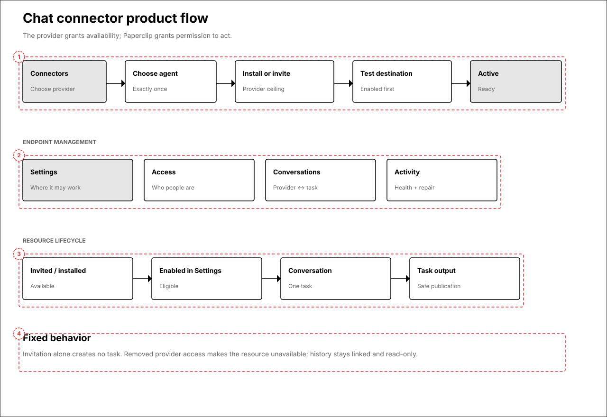
Shared connection start
1.Connectors
Connect tools and places where people talk to agents.
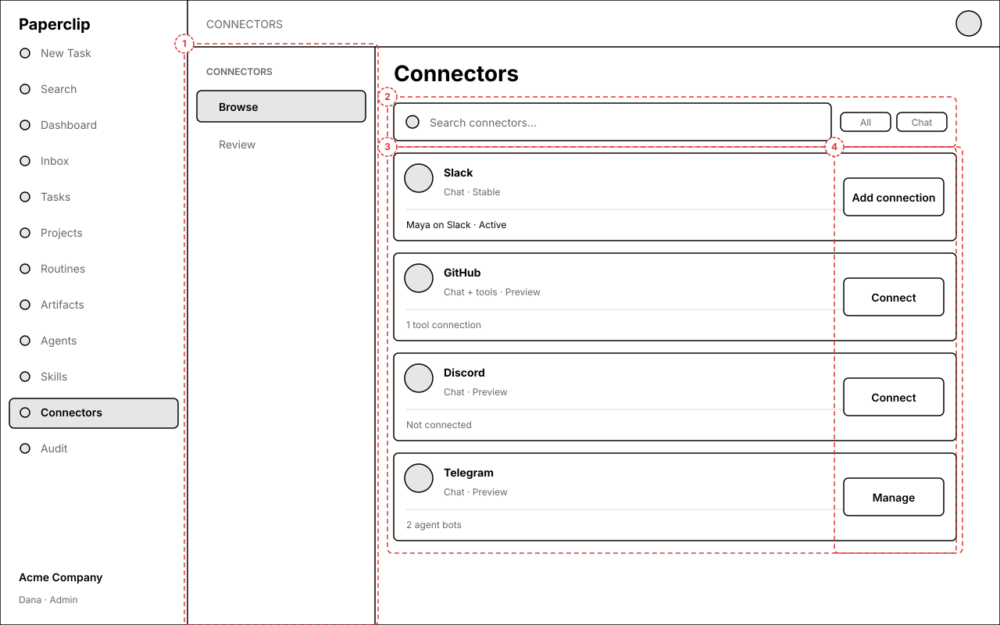
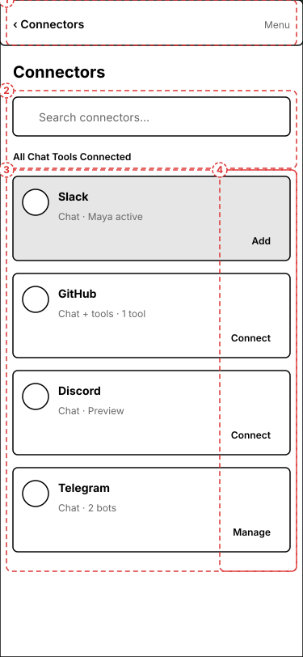
Annotations
- 1 — The existing Apps catalog remains the entry point.
- 2 — Filters separate chat and tool methods.
- 3 — Each connector row has one Connect action.
- 4 — Connection state remains visible in the catalog.
2.Choose how to connect
Shown for every connector that supports both chat and tool methods.
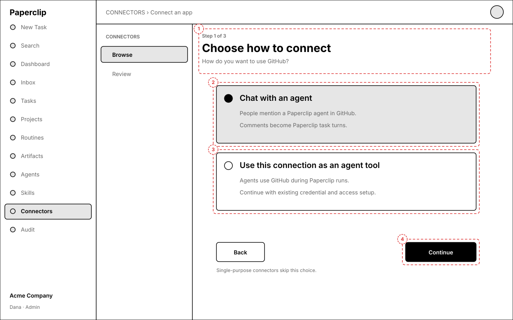
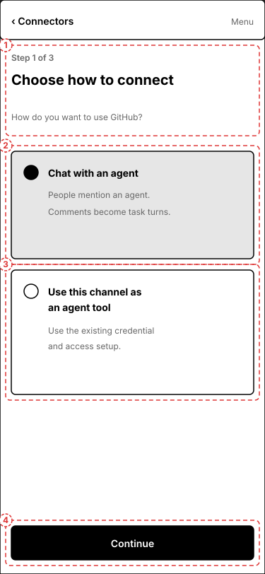
Annotations
- 1 — The existing connection wizard shell and selected provider are reused.
- 2 — Chat with an agent is the incoming-conversation path.
- 3 — Use this connection as an agent tool is the outbound tool/credential path.
- 4 — Single-purpose providers skip the choice.
3.Which agent do you want to chat with?
Choose the one agent represented by this connection.
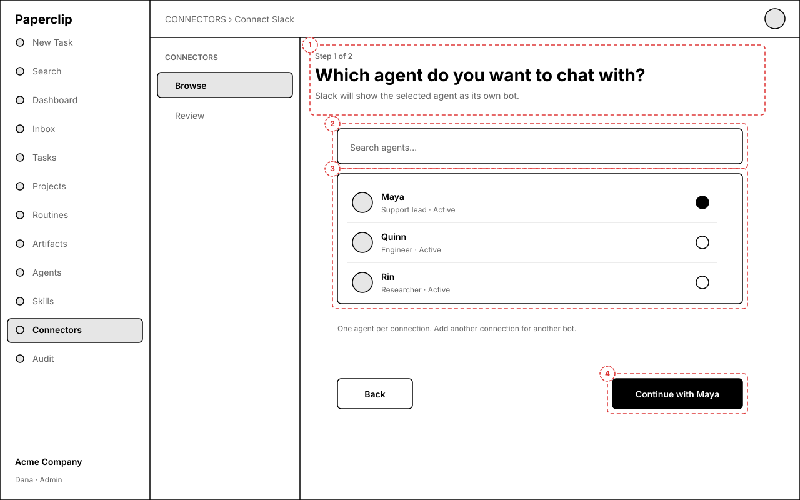
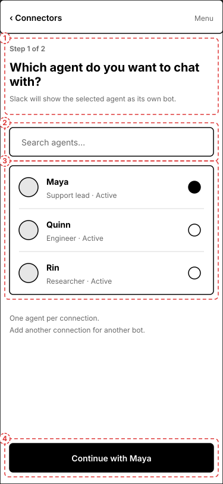
Annotations
- 1 — The existing agent selector is reused.
- 2 — Only active agents can be selected.
- 3 — One selection is required.
- 4 — Continue begins provider setup.
Slack connector
13.Connect a Slack app
Bring your own Slack app using Paperclip's prepared manifest.
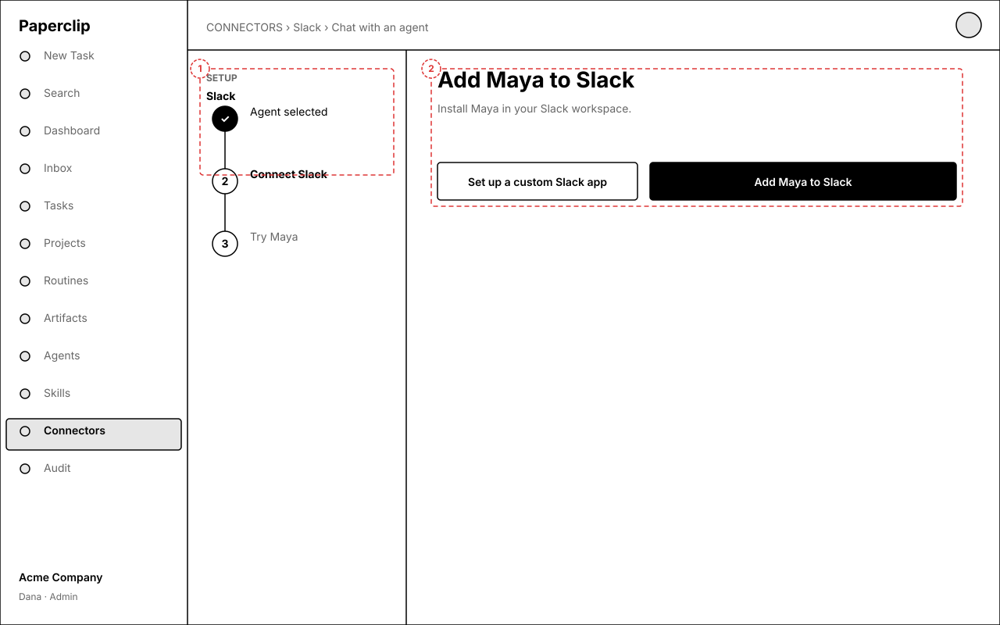
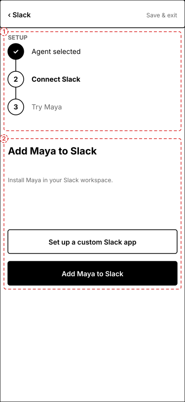
Annotations
- 1 — The prepared manifest and exact provider locations make the customer-owned App the complete required path.
- 2 — Only the Bot User OAuth Token and Signing Secret are entered, and both remain write-only.
- 3 — Managed Add to Slack is an optional later convenience and cannot gate this path or release.
What the actions do
- Connect Slack app — Stores the two write-only credentials and verifies the Slack bot identity and required scopes.
- Open Slack app settings — Opens Slack's app-management page where the operator creates and installs the customer-owned App.
41.Try Maya in Slack
Start one task and reply to it once.
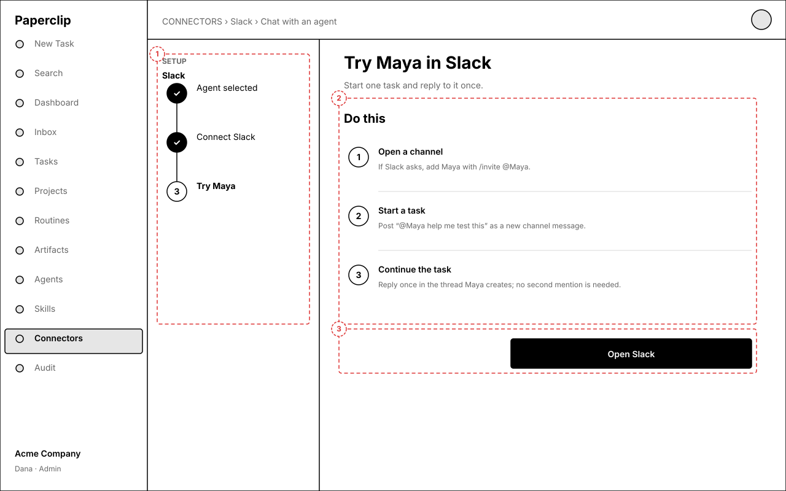
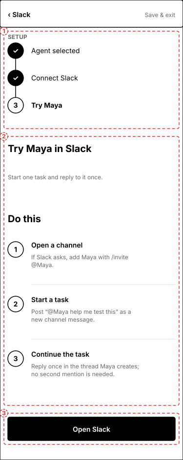
Annotations
- 1 — The body is only the three actions needed to test the real Slack interaction.
- 2 — The instructions teach the root-mention-to-thread Paperclip task boundary.
- 3 — There is one action: open Slack and perform the test.
What the actions do
- Open Slack — Opens the installed workspace while Paperclip waits for the root mention and thread reply to complete setup.
14.Slack settings
Enable the Slack channels where Maya may create and continue tasks.
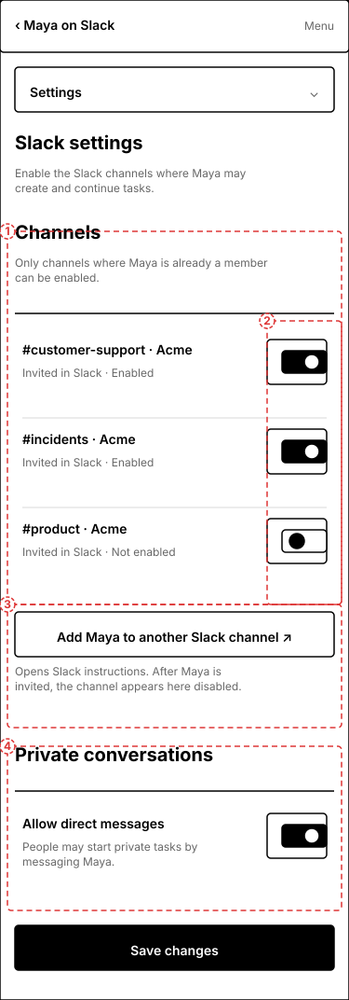
Annotations
- 1 — Only provider-available destinations appear here.
- 2 — Each toggle is Paperclip's independent allow or deny decision.
- 3 — The provider action changes availability; newly discovered destinations remain disabled.
- 4 — Private-conversation reach is an explicit Paperclip choice.
26.Slack access
Decide how people are identified when they message Maya.
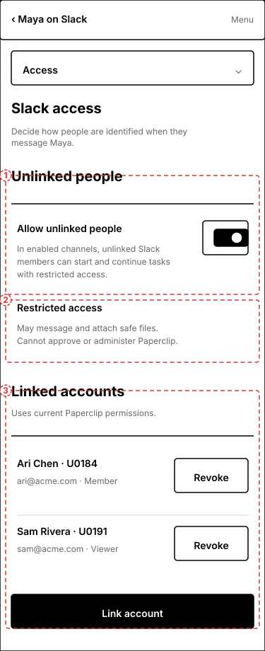
Annotations
- 1 — The only guest-policy choice is whether unlinked people may participate.
- 2 — The restricted profile permits task conversation but never Paperclip governance.
- 3 — Linked accounts map a stable Slack workspace ID + user ID to a Paperclip user and can be revoked.
27.Slack conversations
Conversations created through this connection.
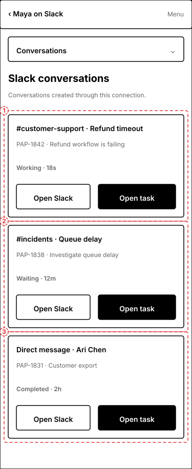
Annotations
- 1 — The active row pairs one Slack conversation with its task, state, Open Slack, and Open task links.
- 2 — The waiting row keeps the same compact fields and actions.
- 3 — The completed row remains available as history with the same two links.
28.Slack activity
Health, deliveries, publications, and repair actions.
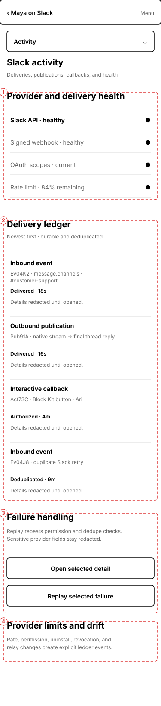
Annotations
- 1 — Provider, credential, callback, and deployment-selected delivery health are summarized in one operational section.
- 2 — Inbound deliveries, callbacks, and outbound publications share a durable chronological ledger.
- 3 — Operators can inspect redacted errors and replay only safe, authorized failed deliveries.
- 4 — Rate limits, permission drift, uninstall or revocation, and provider-specific diagnostics stay visible.
GitHub connector
16.Create or connect a GitHub App
Bring your own dedicated GitHub App and verify it with Paperclip.
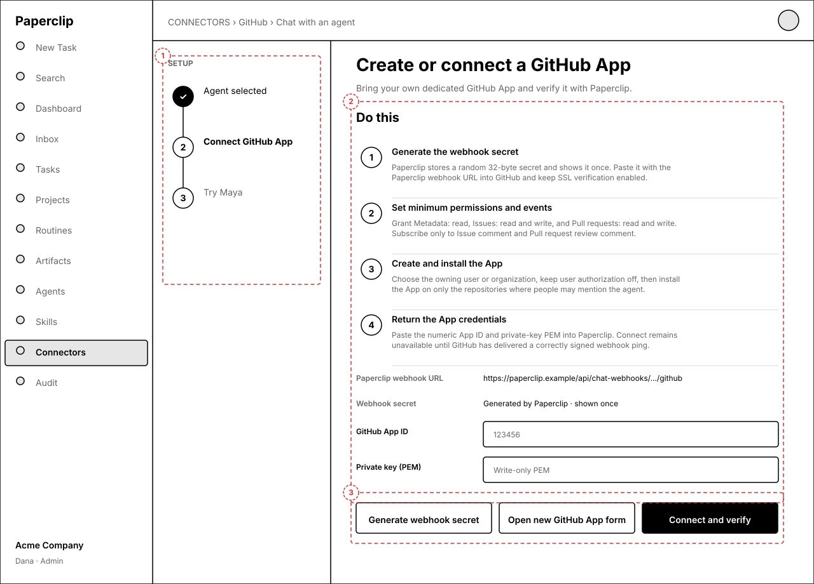
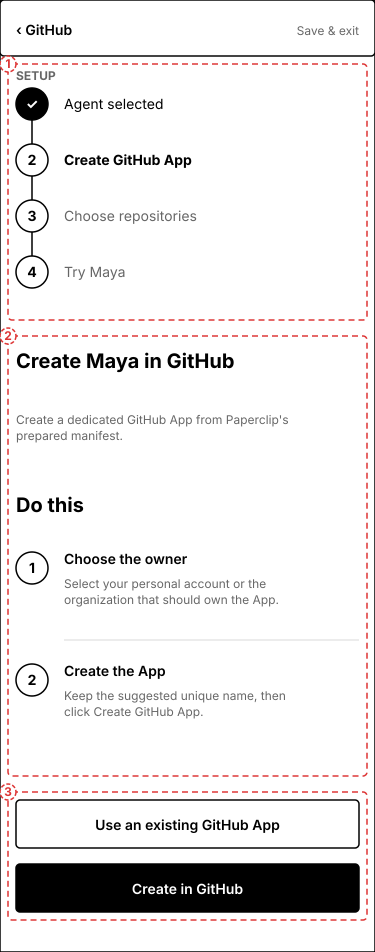
Annotations
- 1 — The customer-owned App path is the complete shipped setup; no managed App Manifest exchange is required.
- 2 — Paperclip generates the webhook secret and never returns it from normal endpoint reads.
- 3 — Grant Metadata read, Issues and Pull requests read/write, plus Issue comment and Pull request review comment events; installation lifecycle events are automatic.
- 4 — GitHub installation scope and Paperclip repository enablement remain independent reach controls.
What the actions do
- Generate webhook secret — Creates and stores the webhook secret, then exposes its one-time copy value.
- Open new GitHub App form — Opens GitHub App registration; GitHub remains the authority for App ownership and repository installation.
- Connect and verify — Authenticates with the App ID and private key, verifies the immutable App identity, required permissions and events, installation, and signed webhook ping.
46.Try Maya in GitHub
Start one task in an installed repository.
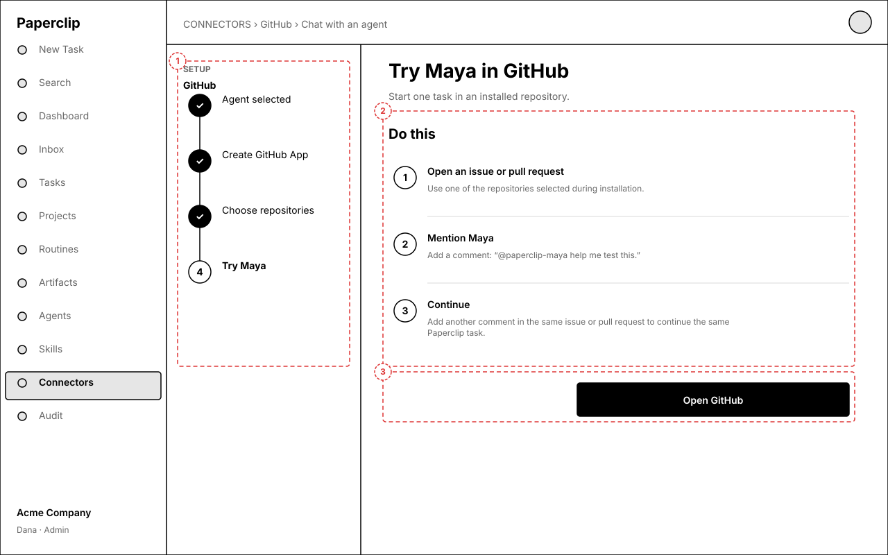
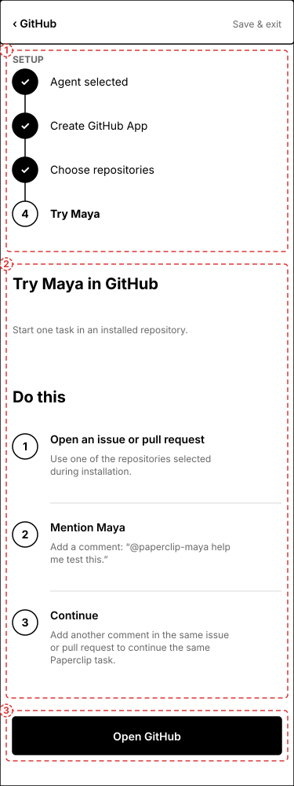
Annotations
- 1 — The test uses the real GitHub issue or pull-request conversation boundary.
- 2 — The first addressed setup repository becomes enabled; other discovered repositories remain disabled.
- 3 — One external conversation maps to one Paperclip task.
What the actions do
- Open GitHub — Opens an installed repository while Paperclip waits for the first signed mention and follow-up to complete setup.
17.GitHub settings
Enable the repositories where Maya may respond to mentions.
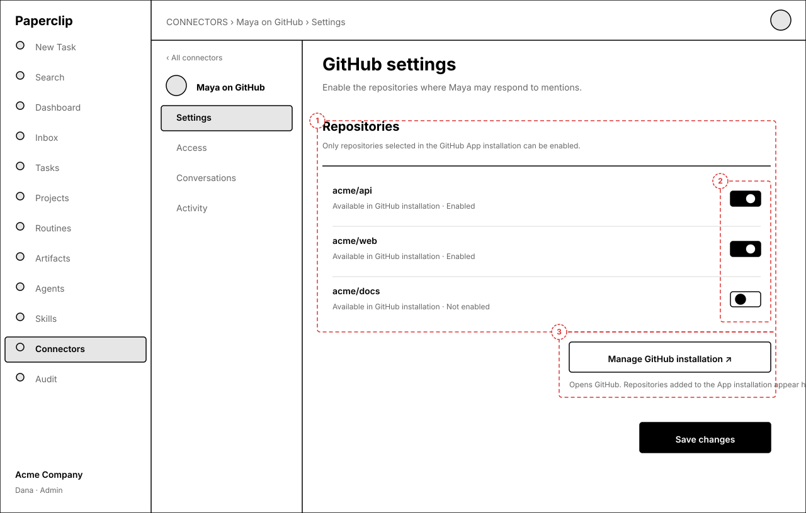
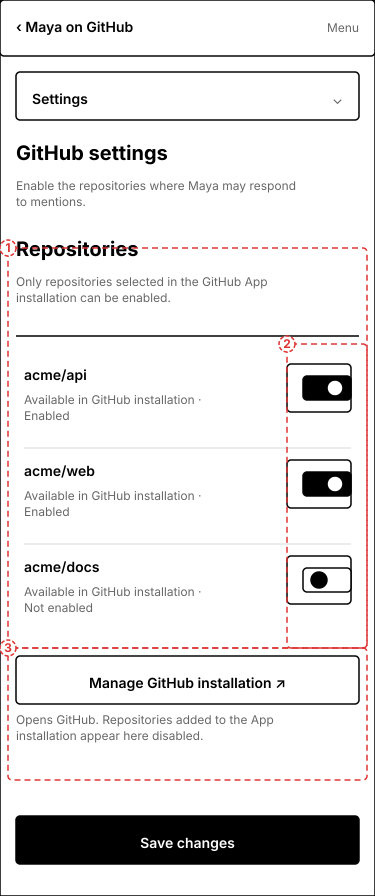
Annotations
- 1 — Only provider-available destinations appear here.
- 2 — Each toggle is Paperclip's independent allow or deny decision.
- 3 — The provider action changes availability; newly discovered destinations remain disabled.
30.GitHub access
Decide how people are identified when they mention Maya.
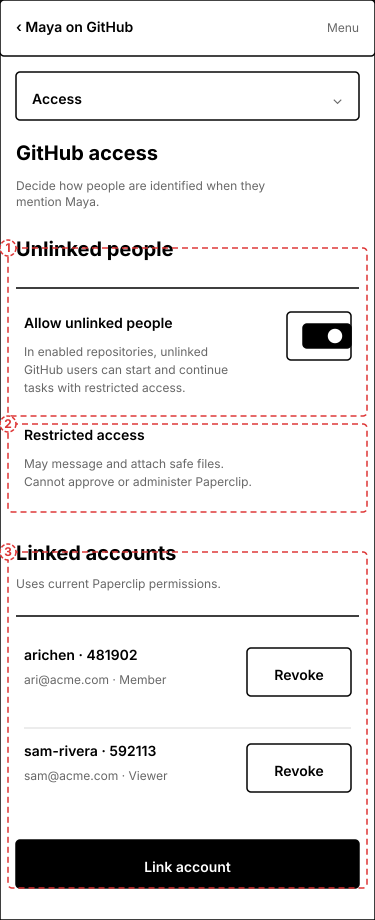
Annotations
- 1 — The only guest-policy choice is whether unlinked people may participate.
- 2 — The restricted profile permits task conversation but never Paperclip governance.
- 3 — Linked accounts map a stable GitHub host + numeric user ID to a Paperclip user and can be revoked.
31.GitHub conversations
Conversations created through this connection.
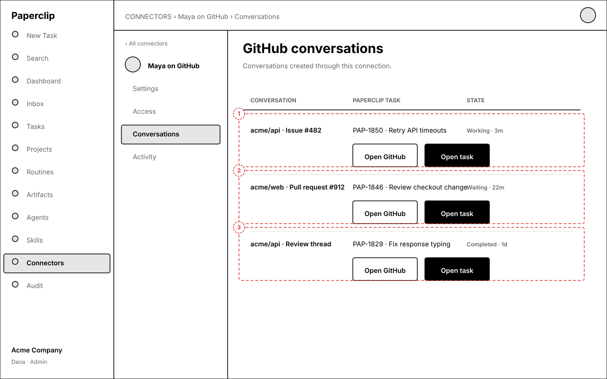
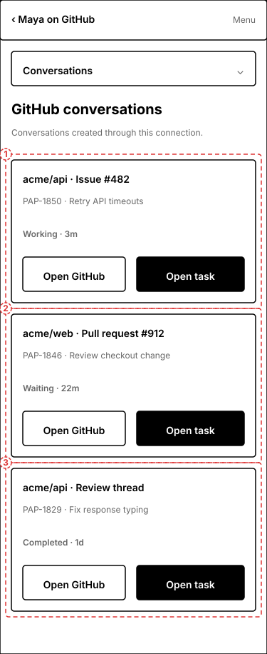
Annotations
- 1 — The active row pairs one GitHub conversation with its task, state, Open GitHub, and Open task links.
- 2 — The waiting row keeps the same compact fields and actions.
- 3 — The completed row remains available as history with the same two links.
32.GitHub activity
Health, deliveries, publications, and repair actions.
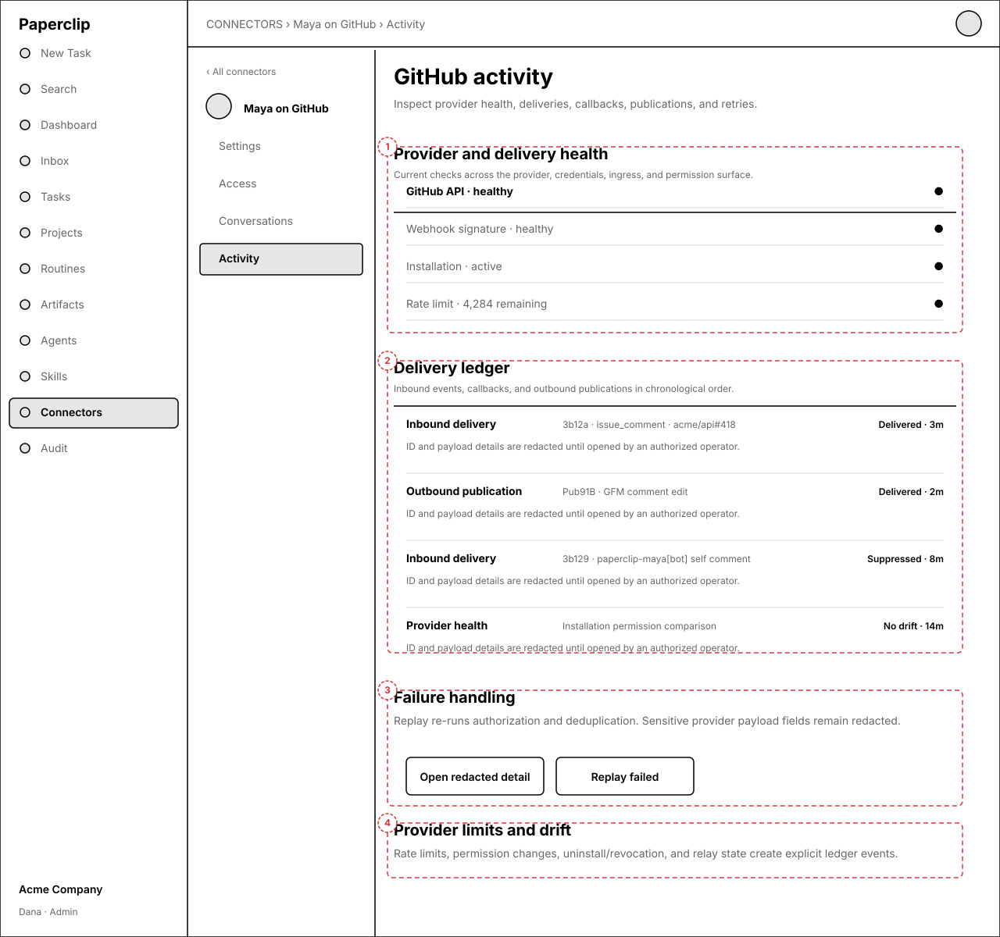
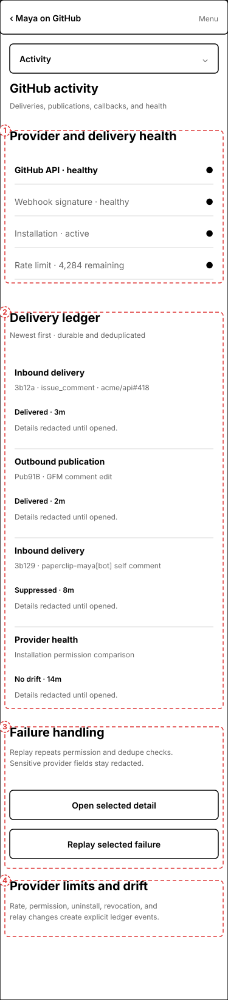
Annotations
- 1 — Provider, credential, callback, and deployment-selected delivery health are summarized in one operational section.
- 2 — Inbound deliveries, callbacks, and outbound publications share a durable chronological ledger.
- 3 — Operators can inspect redacted errors and replay only safe, authorized failed deliveries.
- 4 — Rate limits, permission drift, uninstall or revocation, and provider-specific diagnostics stay visible.
Microsoft Teams connector
19.Create Maya for Microsoft Teams
Register a customer-owned Entra App and Azure Bot.
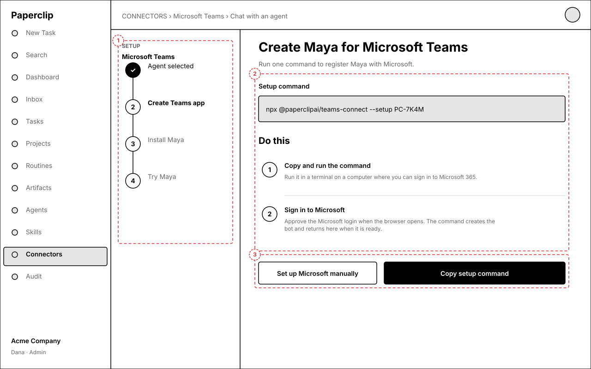
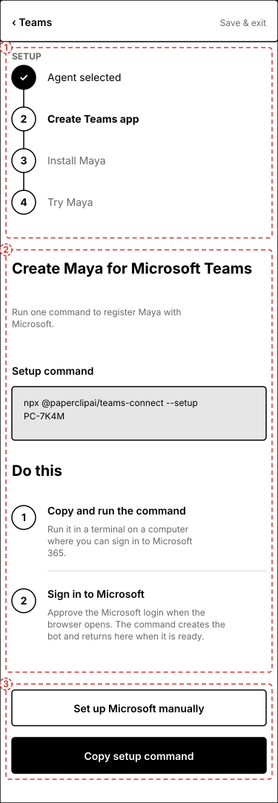
Annotations
- 1 — Paperclip provides the exact public messaging endpoint.
- 2 — The operator creates the single-tenant Entra App, Azure Bot, and Teams app in Microsoft.
- 3 — A future helper is optional and cannot gate the customer-owned path or release.
What the actions do
- Copy messaging endpoint — Copies the public callback for Azure Bot configuration.
- Open Microsoft setup — Opens Microsoft's provider-owned registration surfaces.
- Connect and verify — Stores the client secret write-only and verifies the tenant and application identity.
49.Install Maya in Microsoft Teams
Publish or upload the customer-owned app, then add it in Teams.
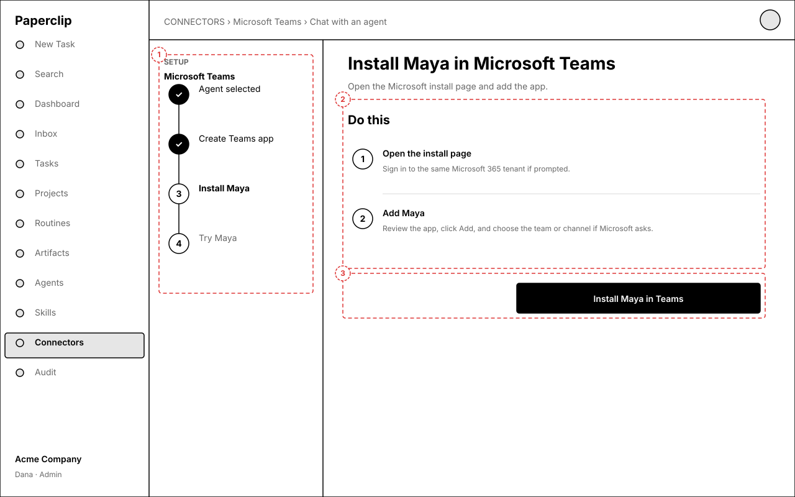
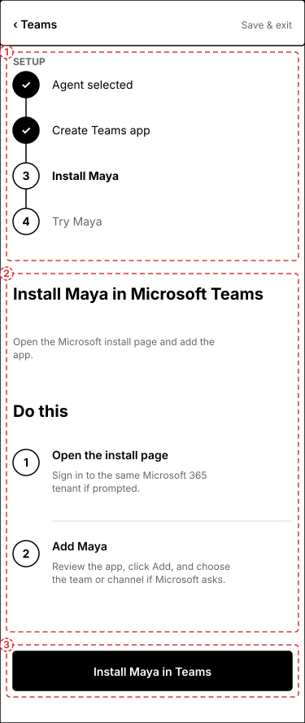
Annotations
- 1 — Microsoft owns app creation, packaging, publication, approval, and installation.
- 2 — Paperclip does not generate a complete Teams package or promise an install link.
- 3 — Tenant approval remains in Microsoft's install experience.
What the actions do
- Open Teams Developer Portal — Opens the provider-owned app surface; tenant policy may require administrator approval.
50.Try Maya in Microsoft Teams
Start one task in a channel post.
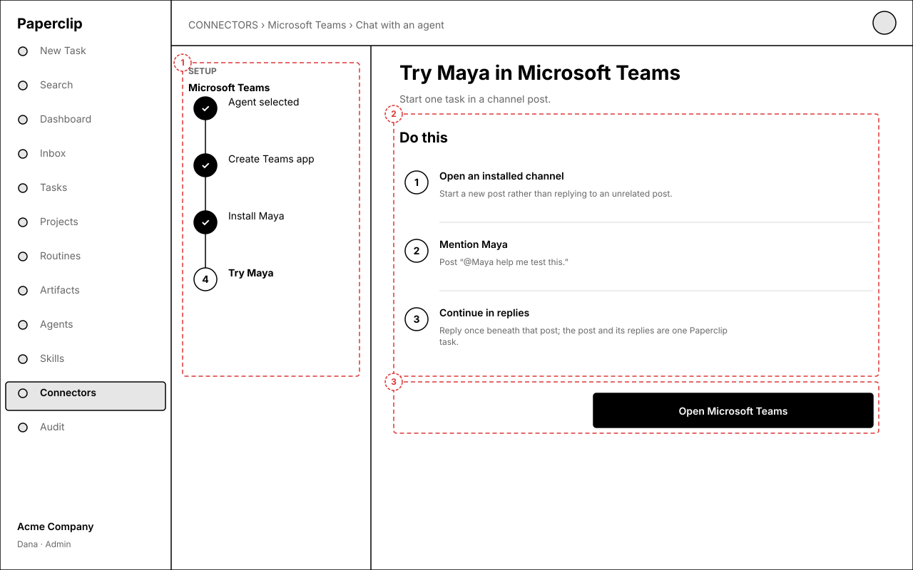
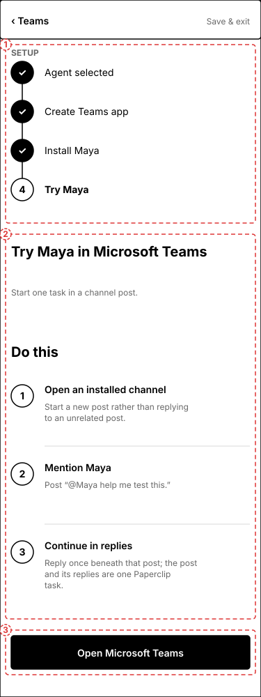
Annotations
- 1 — The body is only the Teams channel test sequence.
- 2 — The instructions teach the channel-post-and-replies task boundary.
- 3 — There is one action: open Teams and perform the test.
What the actions do
- Open Microsoft Teams — Opens Teams while Paperclip waits for the authenticated mention and reply.
48.Microsoft provider setup details
Create the customer-owned bot and app, then paste the three identity values.
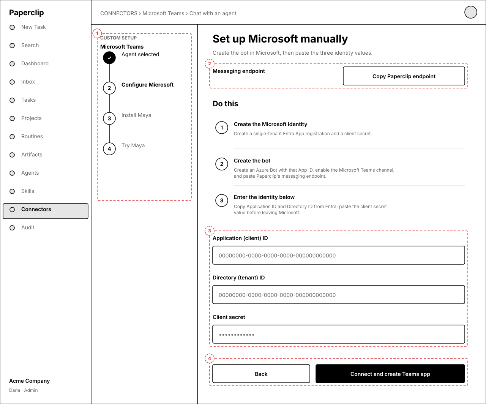
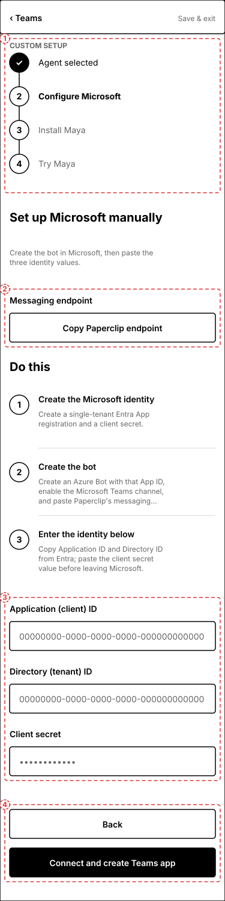
Annotations
- 1 — The endpoint is the one Paperclip-specific value required by Microsoft.
- 2 — Every instruction is a provider portal operation.
- 3 — The three identity fields are the minimum credentials Paperclip needs.
- 4 — Connect does not generate a Teams package or install link.
What the actions do
- Copy Paperclip endpoint — Copies the public messaging endpoint for the Azure Bot resource.
- Connect and verify — Stores the client secret write-only and verifies Microsoft bot authentication.
- Back — Returns to the primary customer-owned credential setup.
20.Microsoft Teams settings
Enable the Teams channels where Maya may create and continue tasks.
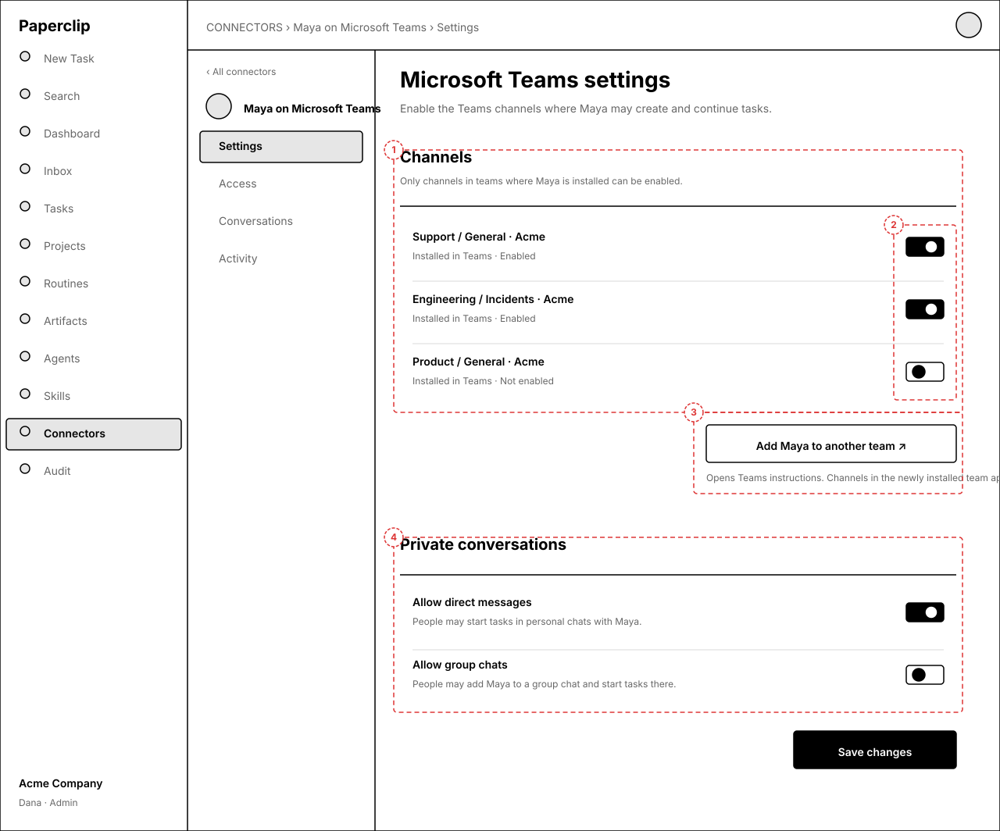
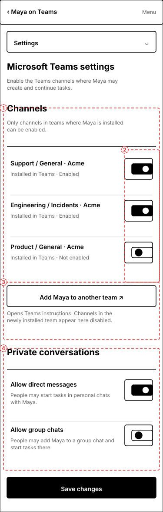
Annotations
- 1 — Only provider-available destinations appear here.
- 2 — Each toggle is Paperclip's independent allow or deny decision.
- 3 — The provider action changes availability; newly discovered destinations remain disabled.
- 4 — Private-conversation reach is an explicit Paperclip choice.
34.Microsoft Teams access
Decide how people are identified when they message Maya.
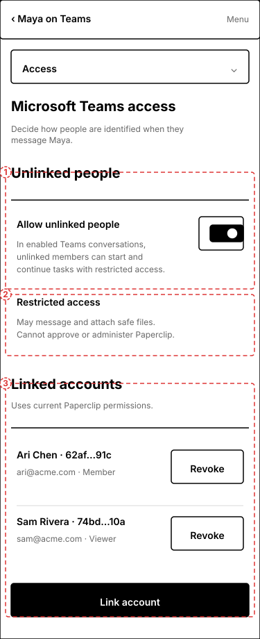
Annotations
- 1 — The only guest-policy choice is whether unlinked people may participate.
- 2 — The restricted profile permits task conversation but never Paperclip governance.
- 3 — Linked accounts map a stable Microsoft tenant ID + Entra object ID to a Paperclip user and can be revoked.
35.Microsoft Teams conversations
Conversations created through this connection.
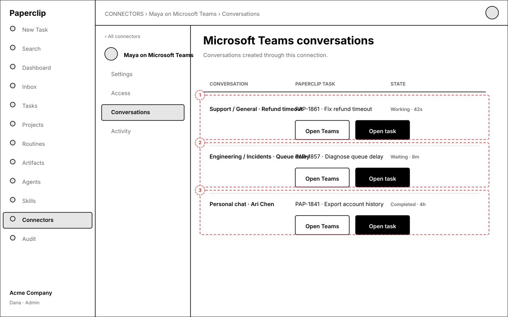
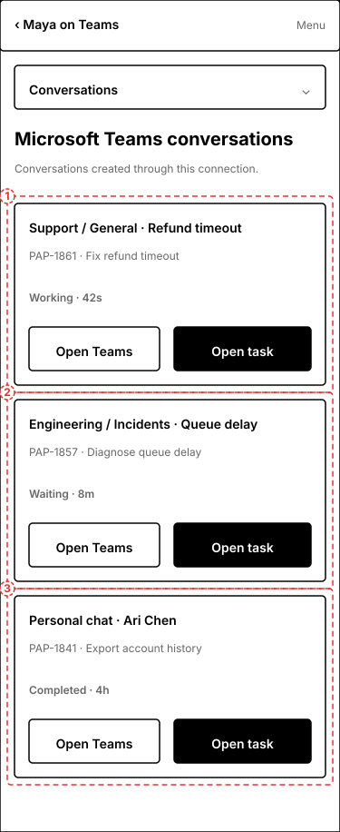
Annotations
- 1 — The active row pairs one Microsoft Teams conversation with its task, state, Open Teams, and Open task links.
- 2 — The waiting row keeps the same compact fields and actions.
- 3 — The completed row remains available as history with the same two links.
36.Microsoft Teams activity
Health, deliveries, publications, and repair actions.
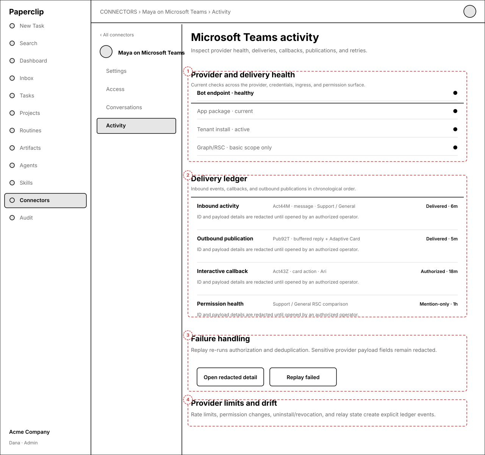
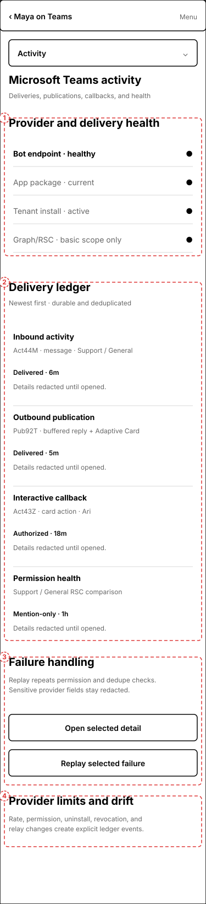
Annotations
- 1 — Provider, credential, callback, and deployment-selected delivery health are summarized in one operational section.
- 2 — Inbound deliveries, callbacks, and outbound publications share a durable chronological ledger.
- 3 — Operators can inspect redacted errors and replay only safe, authorized failed deliveries.
- 4 — Rate limits, permission drift, uninstall or revocation, and provider-specific diagnostics stay visible.
Telegram connector
22.Create Maya in Telegram
Create the bot with BotFather and paste its token.
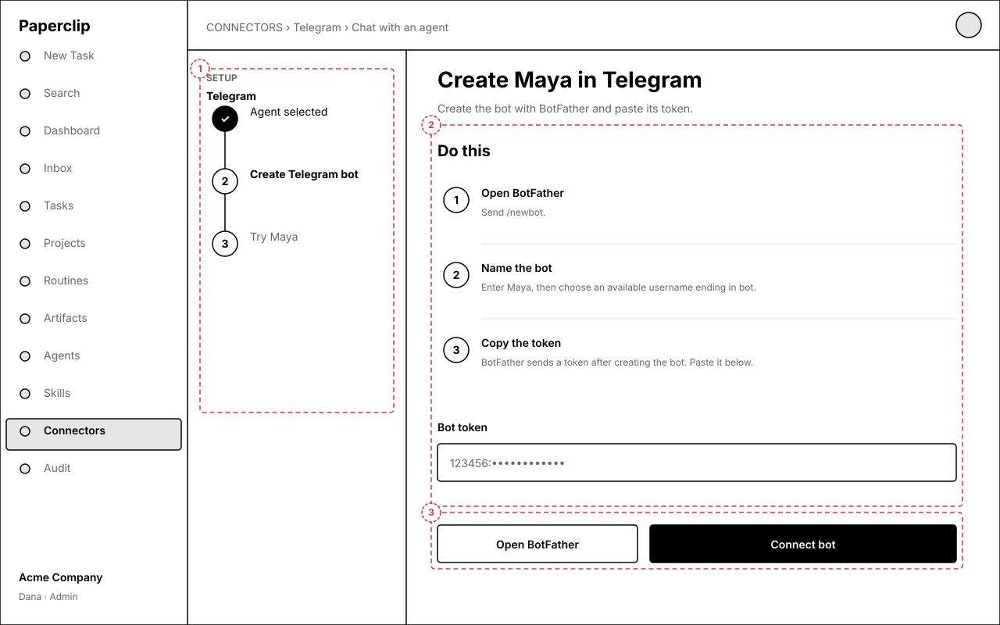
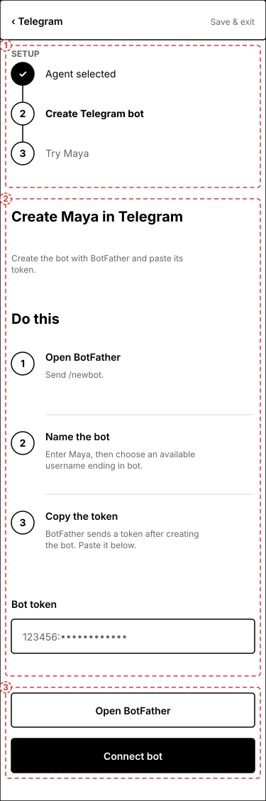
Annotations
- 1 — The page contains the exact three BotFather actions.
- 2 — The bot token is Telegram's only unavoidable setup input.
- 3 — The two buttons let the operator leave for BotFather and connect after returning.
What the actions do
- Open BotFather — Opens Telegram's verified BotFather conversation so the operator can run /newbot.
- Connect bot — Stores the token write-only, verifies the bot with getMe, and continues to the test step.
51.Try Maya in Telegram
Send the bot its first message.
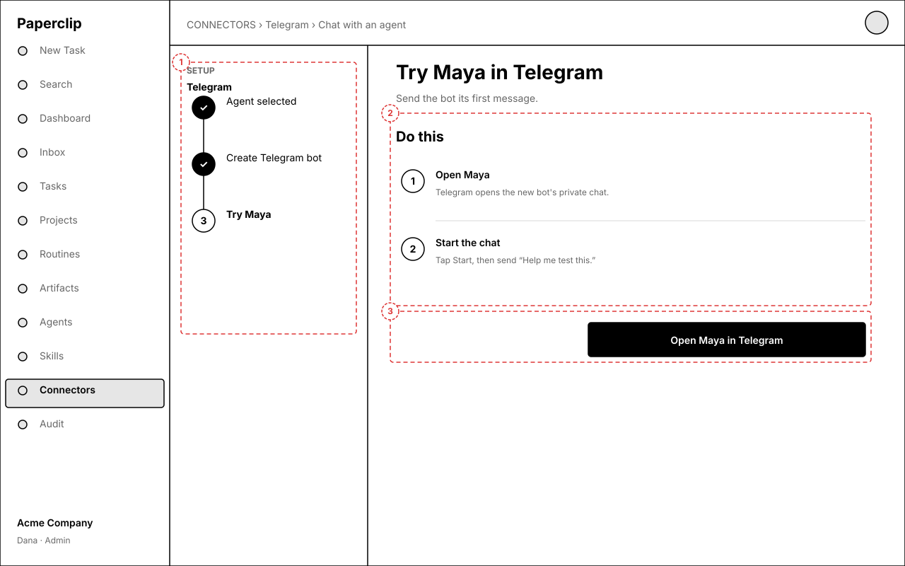
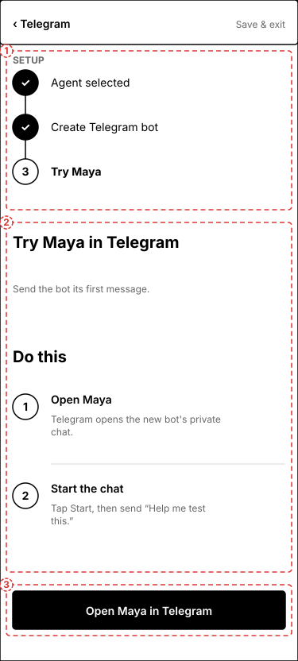
Annotations
- 1 — The minimum proof is one private message; group and forum reach can be added after connection.
- 2 — The body contains only the two Telegram actions required for the test.
- 3 — There is one action: open the bot and send the message.
What the actions do
- Open Maya in Telegram — Opens the bot's t.me link while Paperclip waits for the first verified private message to complete setup.
23.Telegram settings
Enable the Telegram chats and topics where Maya may create and continue tasks.
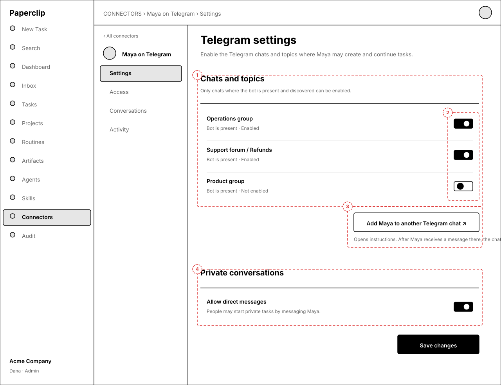
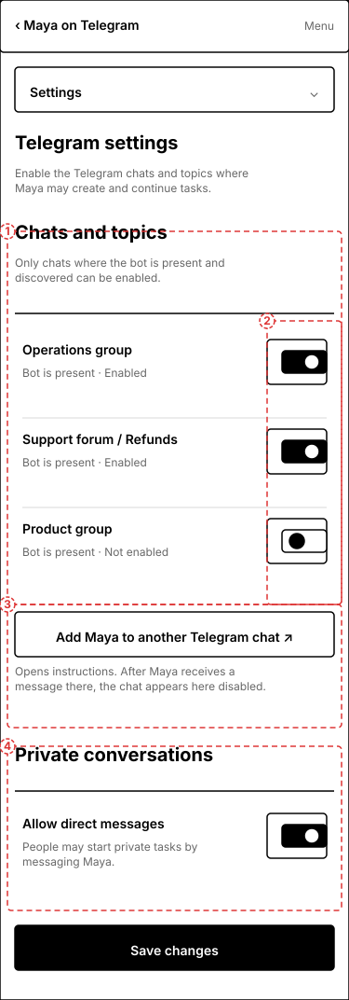
Annotations
- 1 — Only provider-available destinations appear here.
- 2 — Each toggle is Paperclip's independent allow or deny decision.
- 3 — The provider action changes availability; newly discovered destinations remain disabled.
- 4 — Private-conversation reach is an explicit Paperclip choice.
38.Telegram access
Decide how people are identified when they message Maya.
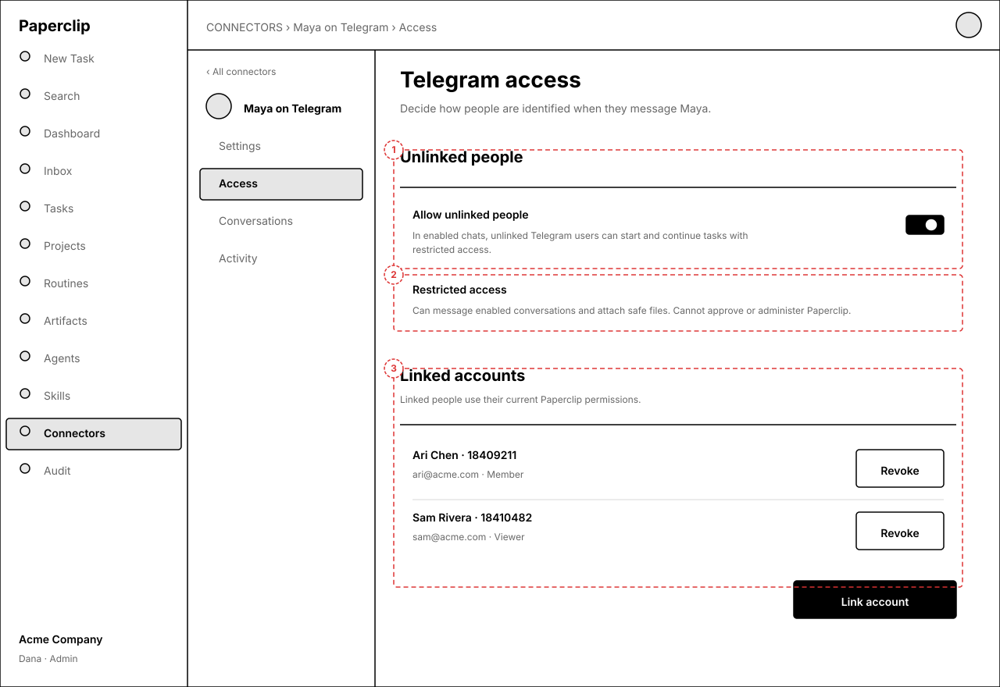
Annotations
- 1 — The only guest-policy choice is whether unlinked people may participate.
- 2 — The restricted profile permits task conversation but never Paperclip governance.
- 3 — Linked accounts map a stable Telegram bot ID + numeric user ID to a Paperclip user and can be revoked.
39.Telegram conversations
Conversations created through this connection.
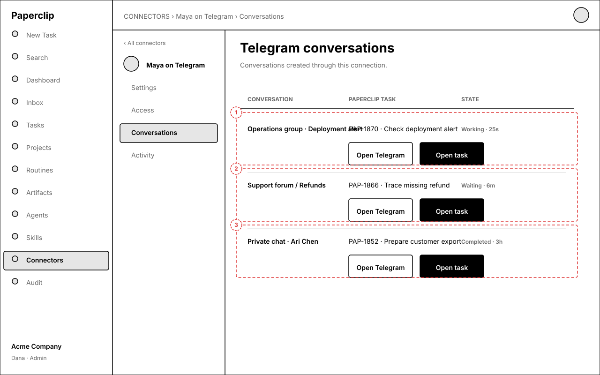
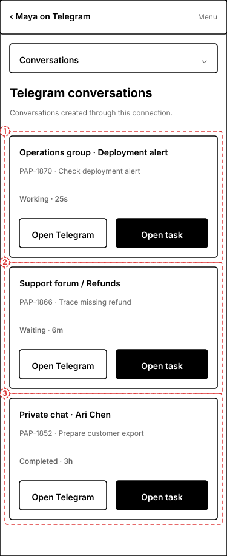
Annotations
- 1 — The active row pairs one Telegram conversation with its task, state, Open Telegram, and Open task links.
- 2 — The waiting row keeps the same compact fields and actions.
- 3 — The completed row remains available as history with the same two links.
40.Telegram activity
Health, deliveries, publications, and repair actions.
Annotations
- 1 — Provider, credential, callback, and deployment-selected delivery health are summarized in one operational section.
- 2 — Inbound deliveries, callbacks, and outbound publications share a durable chronological ledger.
- 3 — Operators can inspect redacted errors and replay only safe, authorized failed deliveries.
- 4 — Rate limits, permission drift, uninstall or revocation, and provider-specific diagnostics stay visible.
Shared Paperclip surfaces
11.Externally connected task
A normal Paperclip task connected to its provider conversation.
Annotations
- 1 — The task shows its external source and provider link.
- 2 — External actors remain attributed.
- 3 — Eligible agent output shows publication status.
- 4 — Board comments remain internal unless Send to channel is selected.
12.Agent Channels
See every provider identity representing this agent.
Annotations
- 1 — Channel identities are summarized per provider.
- 2 — Health and recent tasks remain visible.
- 3 — Connections open in Connectors.
- 4 — Connect a channel preselects this agent.
Permission model
- Provider availability — Slack, Teams, and Telegram decide where the bot is installed or invited. GitHub decides which repositories belong to the App installation.
- Paperclip enablement — Paperclip responds only in provider resources that a Paperclip administrator has enabled for this connection. Invitation or installation alone is not permission to create a task.
- Effective reach — A message is eligible only when the provider delivers it, its resource is enabled in Paperclip, the connection is active, and the sender has authority for the requested action.
- Safe default — The destination used for the successful setup test becomes the first enabled resource. Resources discovered later start disabled.